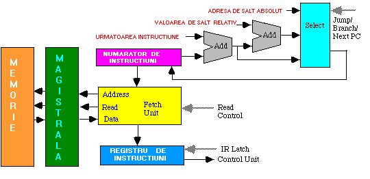
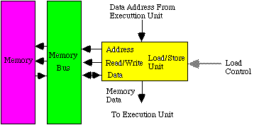
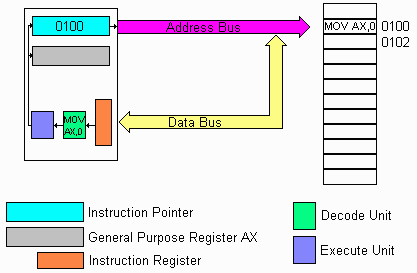
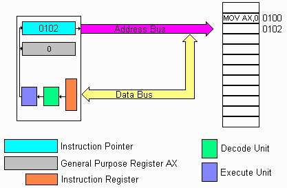

| Faza de extragere, decodare, executie |
Cele mai multe procesoare din noua generatie functioneaza bazindu-se pe principiul extragere(fetch)
decodare,executie.Acesta arhitectura de functionare este numita dealtfel Arhitectura Von Nuemen .
Executia unei instructiuni de catre procesor este impartita in trei faze distincte, Extragere (fetch), Decodificare,
si Executie.
Faza de extragere (Ciclul de fetch)
In prima faza procesorul genereaza semnalele necesare extragerii urmatoarei instructiuni
din memoria sistem . Instructiunile sunt transferate din memorie intr-o locatie interna
din procesor (registrul de instructiuni) .
Fig 4_5: Ciclul de Fetch , citirea unei instructiuni
In imaginea de sus, procesorul este pregatit sa inceapa ciclul de fetch. Continutul curent al numaratorului de instruction
este adresa 0100. Aceasta valoare este plasata pe magistrala de adrese,si la semnalul READ este activata pe magistrala de adrese. Memoria receptioneaza aceasta adresa si cauta continutul locatiei
cu adresa 0100,in memorie care in acest caz este instructiunea MOV AX, 0.
Memoria plaseaza instructiunea pe magistrala de date iar procesorul ransfera instructiunea in Registrul de instructiuni.
Figura de jos prezinta ciclul de fetch ceva mai detliat ,respectiv se prezinta modul de formare a adresei.Adresa se inscrie in Program Counter prin intermediul Selectorului care selecteaza una din cele trei intrari:
- Adresa urmatoarei instructiuni care este vechea adresa incrementata( Next Instruction )
- Adresa urmatoarei instructiuni la care se adauga un salt relativ
- O noua adresa de salt

In procesoarele MIPS sau RISC ,sumatorul pentru incrementare are o intrare fixa
(4 daca adresarea se face pe byte , 1 daca adresarea se face pe word ). Avantajul
este folosirea unui sumator specializat mai rapid .
La procesoarele CISC , lungimea instructiunii nu este fixa astfel la un PC
trebuie incrementata adresa cu valori diferite .Aceasta inseamna ca instructiunea din
registrul de instructiuni trebuie intii decodificata si numai dupa aceea se poate sti
adresa urmatoarei instructiuni.Daca instructiunea este mai lunga trebuie repetat ciclul
de fetch pentru fiecare parte a instructiunii.
In procesoarele cum ar fi 80486, instructiunile pot sa depaseasca lungimee unui cuvint.
Se poate intilni si cazul cand un cuvint contine doua instructiuni si in acest caz unitatea
de fetch trebuie sa realinieze cuvintul citit separindu-l in doi octeti fiecare reprezentind
cite o instructiune .
In actualele implementari ale arhitecturilor Intel unitatea de fetch aduce mai multe instructiuni
consecutive intr-un buffer dupa care urmareste unitatea de control daca foloseste instructiunile
aduse daca nu reumple bufferul cu un nou set de instructiuni de la alta adresa (neconcordanta intre continutul
bufferului si nevoile UC se petrece la aparitia instructiunilor de salt).Acest procedeu sporeste viteza
procesorului dar necesita hard suplimentar pentru golirea bufferului in caz de instructiuni de salt.
Incarcare si memorare
Unitatea pentru incarcare/memorare este similara cu unitatea de extragere a instructiunilor
(fetch), fiind o interfata intre memorie si registrul pentru instructiuni. Aceasta unitate,trebuie sa
gestioneze scrierea si citirea datelor.

Adresa de date poate veni dintr-o instructiune sau poate fi rezultatul
unor operatii intre operanzi din instructiune si valori aflate in registrii
Cind adresa trebuie calculata aceasta se face cu o unitate specializata
numita ALU pentru adrese sau poate fi folosi ALU clasic folosit pentru
operatii aritmetice obisnuite.
In arhitectura procesoarelor MIPS sunt prevazute doua memorii diferite
penru date si pentru instructiuni din cauza utilizarii unui cache impartit
in acelasi mod.Aceasta arhitectura este folosita si de procesoarele RISC.
Instructiunile sunt decodificate de catre procesor.In timpul acestui ciclu procesorul,daca instructiunea o cere,va aduce operanzi ceruti de instructiune.
De exemplu instructiunea MOV AX, 0 inscrie valoarea 0 in registrul AX. Procesorul are deja instructiunea MOV AX dar mai are nevoie de inca un cuvint care
reprezinta un operand respectiv valoarea 0 pentru a executa instructiunea.
In aceasta situatie procesorul va mai executa un ciclu de fetch pentru a aduce valoarea operandului din urmatoarea locatie de memorie(in cazul din figura de mai jos la adresa 0101).

Fig 4_6: Ciclul de decodificare, decodificarea instructiunilor
In imaginea de sus procesorul transfera instructiunea din
registrul de instructiuni in Unitatea de decodificare
Aceasta compara instructiunea cu instructiunile dintr-un tabel intern si cind gaseste o potrivire citeste din tabel numarul de pasi care sunt necesari pentru a executa complet instructiunea.
In ultima faza , procesorul executa instructiunea.In exemplul de mai sus trebuia inscris registrul AX cu valoarea 0

Fig 4_7: Ciclul executie , executarea instructiunii
In imaginea de sus, procesorul executa seria de microinstructiuni pe care le implica instructiunea MOVAX,0. In ultima parte se seteaza valoarea
Numaratorului de instructiuni
pentru a adresa urmatoarea instructiune pentru a fi executata si anume se inscrie valoarea 0102.